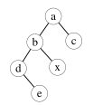
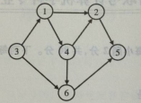
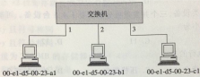
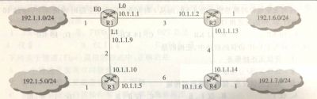
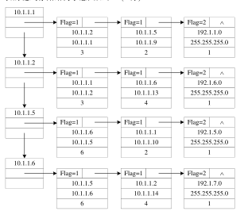

2014 年全国硕士研究生招生考试·计算机学科专业基础综合试题
一、单项选择题：第1～40 小题，每小题2 分，共80 分。下列每题给出的四个选项中， 只有一个选项最符合试题要求。
1．下列程序段的时间复杂度是（ ）。
count=0;
for(k=1;k<=n;k*=2)
for(j=1;j<=n;j++) count++;A．\displaystyle O(\log_2 n) B．\displaystyle O(n) C．\displaystyle O(n\log_2 n) D．\displaystyle O(n^2)
2．假设栈初始为空，将中缀表达式a/b+(c*d-e*f)/g 转换为等价的后缀表达式的过程中， 当扫描到f 时，栈中的元素依次是 。
A．+ ( * - B．+ ( - * C．/ + ( * - * D．/ + - *
3．循环队列放在一维数组A[0…M-1]中，end1 指向队头元素，end2 指向队尾元素的后一个位置。假设队列两端均可进行入队和出队操作，队列中最多能容纳M-1 个元素。初始时为空。下列判断队空和队满的条件中，正确 的是 。
A．队空：end1 == end2； 队满：end1 == (end2+1)mod M B．队空：end1 == end2； 队满：end2 == (end1+1)mod (M-1) C．队空：end2 == (end1+1)mod M； 队满：end1 == (end2+1)mod M D．队空：end1 == (end2+1)mod M； 队满：end2 == (end1+1)mod (M-1)
4．若对如下的二叉树进行中序线索化，则结点x 的左、右线索指向的结点分别是 。

A．e、c B．e、a C．d、c D．b、a
5．将森林F 转换为对应的二叉树T，F 中叶结点的个数等于 。
A．T 中叶结点的个数 B．T 中度为1 的结点个数
C．T 中左孩子指针为空的结点个数 D．T 中右孩子指针为空的结点个数
6．5 个字符有如下4 种编码方案，不是 前缀编码的是 。
A．01,0000,0001,001,1 B．011,000,001,010,1 C．000,001,010,011,100 D．0,100,110,1110,1100
7．对如下所示的有向图进行拓扑排序，得到的拓扑序列可能是 。 A．3,1,2,4,5,6 B．3,1,2,4,6,5 C．3,1,4,2,5,6 D．3,1,4,2,6,5

8．用哈希（散列）方法处理冲突（碰撞）时可能出现堆积（聚集）现象，下列选项中， 会受堆积现象直接影响的是 。 A．存储效率 B．散列函数 C．装填(装载)因子 D．平均查找长度
9．在一棵具有15 个关键字的4 阶B 树中，含关键字的结点个数最多是 。 A．5 B．6 C．10 D．15
10 ．用希尔排序方法对一个数据序列进行排序时，若第1 趟排序结果为 9,1,4,13,7,8,20,23,15，则该趟排序采用的增量（间隔）可能是 。
A．2 B．3 C．4 D．5
11．下列选项中，不可能是快速排序第2 趟排序结果的是 。 A．2,3,5,4,6,7,9 B．2,7,5,6,4,3,9 C．3,2,5,4,7,6,9 D．4,2,3,5,7,6,9
12．程序P 在机器M 上的执行时间是20 秒，编译优化后，P 执行的指令数减少到原来的70%，而CPI 增加到原来的1.2 倍，则P 在M 上的执行时间是 。 A．8.4 秒 B．11.7 秒 C．14 秒 D．16.8 秒
13．若x=103，y=-25，则下列表达式采用8 位定点补码运算实现时，会发生溢出的是 。
A．x+y B．-x+y C．x-y D．-x-y
14．float 型数据据常用IEEE754 单精度浮点格式表示。假设两个float 型变量 \displaystyle x 和 \displaystyle y 分别存放在32 位寄存器 \displaystyle f_1 和 \displaystyle f_2 中，若\displaystyle (f_1)=\mathrm{CC90\,0000H},\ (f_2)=\mathrm{B0C0\,0000H}，则x 和y 之间的关系为 。
A．\displaystyle x<y 且符号相同 B．\displaystyle x<y 且符号不同 C．\displaystyle x>y 且符号相同 D．\displaystyle x>y 且符号不同
15．某容量为256MB 的存储器由若干\displaystyle 4\mathrm M\times8 位的DRAM 芯片构成，该DRAM 芯片的地址引脚和数据引脚总数是 。
A．19 B．22 C．30 D．36
16．采用指令Cache 与数据Cache 分离的主要目的是 。 A．降低Cache 的缺失损失 B．提高Cache 的命中率 C．降低CPU 平均访存时间 D．减少指令流水线资源冲突
17．某计算机有16 个通用寄存器，采用32 位定长指令字，操作码字段（含寻址方式位） 为8 位，Store 指令的源操作数和目的操作数分别采用寄存器直接寻址和基址寻址方式。若基址寄存器可使用任一通用寄存器，且偏移量用补码表示，则Store 指令中偏移量的取值范围是 。
A．-32768 ~ +32767 B．-32767 ~ +32768 C．-65536 ~ +65535 D．-65535 ~ +65536
18．某计算机采用微程序控制器，共有32 条指令，公共的取指令微程序包含2 条微指令，各指令对应的微程序平均由4 条微指令组成，采用断定法（下地址字段法）确定下条微
指令地址，则微指令中下址字段的位数至少是 。 A．5 B．6 C．8 D．9
19．某同步总线采用数据线和地址线复用方式，其中地址/数据线有32 根，总线时钟频率为66MHz，每个时钟周期传送两次数据(上升沿和下降沿各传送一次数据)，该总线的最大数据传输率(总线带宽)是 。 A．132 MB/s B．264 MB/s C．528 MB/s D．1056 MB/s
20．一次总线事务中，主设备只需给出一个首地址，从设备就能从首地址开始的若干连续单元读出或写入多个数据。这种总线事务方式称为 。 A．并行传输 B．串行传输 C．突发传输 D．同步传输
21．下列有关I/O 接口的叙述中，错误 的是 。
A．状态端口和控制端口可以合用同一个寄存器 B．I/O 接口中CPU 可访问的寄存器称为I/O 端口 C．采用独立编址方式时，I/O 端口地址和主存地址可能相同 D．采用统一编址方式时，CPU 不能用访存指令访问I/O 端口
22．若某设备中断请求的响应和处理时间为100ns，每400ns 发出一次中断请求，中断响应所允许的最长延迟时间为50ns，则在该设备持续工作过程中，CPU 用于该设备的I/O 时间占整个CPU 时间的百分比至少是 。
A．12.5% B．25% C．37.5% D．50%
23．下列调度算法中，不可能导致饥饿现象的是 。 A．时间片轮转 B．静态优先数调度 C．非抢占式短作业优先 D．抢占式短作业优先
24．某系统有n 台互斥使用的同类设备，三个并发进程分别需要3、4、5 台设备，可确保系统不发生 死锁的设备数n 最小为 。
A．9 B．10 C．11 D．12
25．下列指令中，不能 在用户态执行的是 。
A．trap 指令 B．跳转指令 C．压栈指令 D．关中断指令
26．一个进程的读磁盘操作完成后，操作系统针对该进程必做的是 。 A．修改进程状态为就绪态 B．降低进程优先级 C．给进程分配用户内存空间 D．增加进程时间片大小
27．现有一个容量为10GB 的磁盘分区，磁盘空间以簇(Cluster)为单位进行分配，簇的大小为4KB，若采用位图法管理该分区的空闲空间，即用一位(bit)标识一个簇是否被分配， 则存放该位图所需簇的个数为 。
A．80 B．320 C．80K D．320K
28．下列措施中，能加快虚实地址转换的是 。 I．增大快表(TLB)容量 II．让页表常驻内存 III．增大交换区(swap) A．仅I B．仅II C．仅I、II D．仅II、III
29．在一个文件被用户进程首次打开的过程中，操作系统需做的是 。 A．将文件内容读到内存中 B．将文件控制块读到内存中 C．修改文件控制块中的读写权限 D．将文件的数据缓冲区首指针返回给用户进程
30．在页式虚拟存储管理系统中，采用某些页面置换算法，会出现Belady 异常现象， 即进程的缺页次数会随着分配给该进程的页框个数的增加而增加。下列算法中，可能出现 Belady 异常现象的是 。
I．LRU 算法 II．FIFO 算法 III．OPT 算法 A．仅II B．仅I、II C．仅I、III D．仅II、III
31．下列关于管道(Pipe)通信的叙述中，正确 的是 。
A．一个管道可实现双向数据传输 B．管道的容量仅受磁盘容量大小限制 C．进程对管道进行读操作和写操作都可能被阻塞 D．一个管道只能有一个读进程或一个写进程对其操作
32．下列选项中，属于多级页表优点的是 。 A．加快地址变换速度 B．减少缺页中断次数 C．减少页表项所占字节数 D．减少页表所占的连续内存空间
33．在OSI 参考模型中，直接为会话层提供服务的是 。 A．应用层 B．表示层 C．传输层 D．网络层
34．某以太网拓扑及交换机当前转发表如下图所示，主机00-e1-d5-00-23-a1 向主机 00-e1-d5-00-23-c1 发送1 个数据帧，主机00-e1-d5-00-23-c1 收到该帧后，向主机 00-e1-d5-00-23-a1 发送1 个确认帧，交换机对这两个帧的转发端口分别是（ ）。

| 目的地址 | 端口 |
| 00-e1-d5-00-23-b1 | 2 |
A．{3}和{1} B．{2,3}和{1} C．{2,3}和{1,2} D．{1,2,3}和{1}
35．下列因素中，不会影响信道数据传输速率的是 。 A．信噪比 B．频率宽带 C．调制速率 D．信号传播速度
36．主机甲与主机乙之间使用后退N 帧协议(GBN)传输数据，甲的发送窗口尺寸为1000， 数据帧长为1000 字节，信道带宽为100Mbps，乙每收到一个数据帧立即利用一个短帧(忽略其传输延迟)进行确认，若甲乙之间的单向传播延迟是50ms，则甲可以达到的最大平均数据传输速率约为 。
A．10Mbps B．20Mbps C．80Mbps D．100Mbps
37．站点A、B、C 通过CDMA 共享链路，A、B、C 的码片序列(chipping sequence)分别是(1,1,1,1)、(1,-1,1,-1)和(1,1,-1,-1)。若C 从链路上收到的序列是(2,0,2,0,0,-2,0,-2,0,2,0,2)， 则C 收到A 发送的数据是 。
A．000 B．101 C．110 D．111
38．主机甲和主机乙已建立了TCP 连接，甲始终以MSS=1KB 大小的段发送数据，并一直有数据发送；乙每收到一个数据段都会发出一个接收窗口为10KB 的确认段。若甲在t 时刻发生超时时拥塞窗口为8KB，则从t 时刻起，不再发生超时的情况下，经过10 个RTT 后，甲的发送窗口是 。 A．10KB B．12KB C．14KB D．15KB
39．下列关于UDP 协议的叙述中，正确 的是 。
I．提供无连接服务 II．提供复用/分用服务 III．通过差错校验，保障可靠数据传输 A．仅I B．仅I、II C．仅II、III D．I、II、III
40．使用浏览器访问某大学Web 网站主页时，不可能 使用到的协议是 。
A．PPP B．ARP C．UDP D．SMTP
二、综合应用题：41—47 小题，共70 分。
41.(13 分)二叉树的带权路径长度(WPL)是二叉树中所有叶结点的带权路径长度之和。给定一棵二叉树T，采用二叉链表存储，结点结构为：
| left | weight | right |
其中叶结点的weight 域保存该结点的非负权值。设root 为指向T 的根结点的指针，请设计求T 的WPL 的算法，要求：
1）给出算法的基本设计思想； 2）使用C 或C++语言，给出二叉树结点的数据类型定义； 3）根据设计思想，采用C 或C++语言描述算法，关键之处给出注释。
42. (10 分)某网络中的路由器运行OSPF 路由协议，题42 表是路由器R1 维护的主要链路状态信息(LSI)，题42 图是根据题42 表及R1 的接口名构造出来的网络拓扑。
题42 表 R1 所维护的LSI
| R1 的LSI | R2 的LSI | R3 的LSI | R4 的LSI | 备 注 | ||
| Router ID | 10.1.1.1 | 10.1.1.2 | 10.1.1.5 | 10.1.1.6 | 标识路由器的IP 地址 | |
| Link1 | ID | 10.1.1.2 | 10.1.1.1 | 10.1.1.6 | 10.1.1.5 | 所连路由器的Router ID |
| IP | 10.1.1.1 | 10.1.1.2 | 10.1.1.5 | 10.1.1.6 | Link1 的本地IP 地址 | |
| Metric | 3 | 3 | 6 | 6 | Link1 的费用 | |
| Link2 | ID | 10.1.1.5 | 10.1.1.6 | 10.1.1.1 | 10.1.1.2 | 所连路由器的Router ID |
| IP | 10.1.1.9 | 10.1.1.13 | 10.1.1.10 | 10.1.1.14 | Link2 的本地IP 地址 | |
| Metric | 2 | 4 | 2 | 4 | Link2 的费用 | |
| Net1 | Prefix | 192.1.1.0/24 | 192.1.6.0/24 | 192.1.5.0/24 | 192.1.7.0/24 | 直连网络Net1 的网络前缀 |
| Metric | 1 | 1 | 1 | 1 | 到达直连网络Net1 的费用 |

题42 图 R1 构造的网络拓扑请回答下列问题。 1）本题中的网络可抽象为数据结构中的哪种逻辑结构？ 2）针对题42 表中的内容，设计合理的链式存储结构，以保存题42 表中的链路状态信息(LSI)。要求给出链式存储结构的数据类型定义，并画出对应题42 表的链式存储结构示意图(示意图中可仅以ID 标识结点)。
3）按照迪杰斯特拉(Dijikstra)算法的策略，依次给出R1 到达题42 图中子网192.1.x.x 的最短路径及费用。
43．（9 分）请根据题42 描述的网络，继续回答下列问题。 1）假设路由表结构如下表所示，请给出题42 图中R1 的路由表，要求包括到达题42
图中子网192.1.x.x 的路由，且路由表中的路由项尽可能少。
| 目的网络 | 下一条 | 接口 |
2）当主机192.1.1.130 向主机192.1.7.211 发送一个TTL=64 的IP 分组时，R1 通过哪个接口转发该IP 分组？主机192.1.7.211 收到的IP 分组TTL 是多少？
3）若R1 增加一条Metric 为10 的链路连接Internet，则题42 表中R1 的LSI 需要增加哪些信息？
44. （12 分）某程序中有如下循环代码段 P：
for(int i = 0; i < N; i++) sum+=A[i];假设编译时变量sum 和i 分别分配在寄存器R1 和R2 中。常量N 在寄存器R6 中，数组A 的首地址在寄存器R3 中。程序段P 起始地址为0804 8100H，对应的汇编代码和机器代码如下表所示。
| 编号 | 地址 | 机器代码 | 汇编代码 | 注释 |
| 1 | 08048100H | 00022080H | loop: sll R4,R2,2 | (R2)<<2 → R4 |
| 2 | 08048104H | 00083020H | add R4,R4,R3 | (R4)+(R3) → R4 |
| 3 | 08048108H | 8C850000H | load R5,0(R4) | ((R4)+0) → R5 |
| 4 | 0804810CH | 00250820H | add R1,R1,R5 | (R1)+(R5) → R1 |
| 5 | 08048110H | 20420001H | add R2,R2,1 | (R2)+1 → R2 |
| 6 | 08048114H | 1446FFFAH | bne R2,R6,loop | if(R2)!=(R6) goto loop |
执行上述代码的计算机M 采用32 位定长指令字，其中分支指令bne 采用如下格式：
31 26 25 21 20 16 15 0
| OP | Rs | Rd | OFFSET |
OP 为操作码;；Rs 和Rd 为寄存器编号；OFFSET 为偏移量，用补码表示。请回答下列问题，并说明理由。
1）M 的存储器编址单位是什么？ 2）已知sll 指令实现左移功能，数组A 中每个元素占多少位？ 3）题44 表中bne 指令的OFFSET 字段的值是多少？已知bne 指令采用相对寻址方式， 当前PC 内容为bne 指令地址，通过分析题44 表中指令地址和bne 指令内容，推断出bne 指令的转移目标地址计算公式。
4）若M 采用如下“按序发射、按序完成”的5 级指令流水线：IF（取值）、ID（译码及取数）、EXE（执行）、MEM（访存）、WB（写回寄存器），且硬件不采取任何转发措施， 分支指令的执行均引起3 个时钟周期的阻塞，则P 中哪些指令的执行会由于数据相关而发生流水线阻塞？哪条指令的执行会发生控制冒险？为什么指令1 的执行不会因为与指令5 的数据相关而发生阻塞？
45．假设对于44 题中的计算机M 和程序P 的机器代码，M 采用页式虚拟存储管理；P 开始执行时，(R1)=(R2)=0，(R6)=1000，其机器代码已调入主存但不在Cache 中；数组A 未调入主存，且所有数组元素在同一页，并存储在磁盘同一个扇区。请回答下列问题并说明理由。
1）P 执行结束时，R2 的内容是多少？ 2）M 的指令Cache 和数据Cache 分离。若指令Cache 共有16 行，Cache 和主存交换的块大小为32 字节，则其数据区的容量是多少？若仅考虑程序段P 的执行，则指令Cache 的命中率为多少？
3）P 在执行过程中，哪条指令的执行可能发生溢出异常？哪条指令的执行可能产生缺页异常？对于数组A 的访问，需要读磁盘和TLB 至少各多少次？
46. 文件F 由200 条记录组成，记录从1 开始编号。用户打开文件后，欲将内存中的一条记录插入到文件F 中，作为其第30 条记录。请回答下列问题，并说明理由。
1）若文件系统采用连续分配方式，每个磁盘块存放一条记录，文件F 存储区域前后均有足够的空闲磁盘空间，则完成上述插入操作最少需要访问多少次磁盘块？F 的文件控制块内容会发生哪些改变？
2）若文件系统采用链接分配方式，每个磁盘块存放一条记录和一个链接指针，则完成上述插入操作需要访问多少次磁盘块？若每个存储块大小为1KB，其中4 个字节存放链接指针，则该文件系统支持的文件最大长度是多少？
47. 系统中有多个生产者进程和多个消费者进程，共享一个能存放1000 件产品的环形缓冲区（初始为空）。当缓冲区未满时，生产者进程可以放入其生产的一件产品，否则等待； 当缓冲区未空时，消费者进程可以从缓冲区取走一件产品，否则等待。要求一个消费者进程从缓冲区连续取出10 件产品后，其他消费者进程才可以取产品。请使用信号量P，V(wait()， signal())操作实现进程间的互斥与同步，要求写出完整的过程，并说明所用信号量的含义和初值。
2014 年计算机学科专业基础综合试题参考答案
一、单项选择题
（一）单选题答案
| 1．C | 2．B | 3．A | 4．D | 5．C | 6．D | 7．D | 8．D |
| 9．D | 10．B | 11．C | 12．D | 13．C | 14．A | 15．A | 16．D |
| 17．A | 18．C | 19．C | 20．C | 21．D | 22．B | 23．A | 24．B |
| 25．D | 26．A | 27．A | 28．C | 29．B | 30．A | 31．C | 32．D |
| 33．C | 34．B | 35．D | 36．C | 37．B | 38．A | 39．B | 40．D |
（二）单选题答案解析
1．内层循环条件 \displaystyle j\le n 与外层循环变量无关，每次内层循环执行 \displaystyle n 次。外层循环条件为 \displaystyle k\le n，增量为 \displaystyle k\mathrel{*=}2，可知循环次数满足 \displaystyle 2^k\le n，即 \displaystyle k\le\log_2 n。所以内层时间复杂度为 \displaystyle O(n)，外层为 \displaystyle O(\log_2 n)，嵌套循环的时间复杂度为 \displaystyle T(n)=T_1(n)T_2(n)=O(n\log_2 n)。
2．将中缀表达式转换为后缀表达式的算法思想如下： 从左向右开始扫描中缀表达式； 遇到数字时，加入后缀表达式； 遇到运算符时： a. 若为 '('，入栈； b. 若为 ')'，则依次把栈中的的运算符加入后缀表达式中，直到出现'('，从栈中删除'(' ； c. 若为除括号外的其他运算符， 当其优先级高于除'('以外的栈顶运算符时，直接入栈。 否则从栈顶开始，依次弹出比当前处理的运算符优先级高和优先级相等的运算符，直到一个比它优先级低的或者遇到了一个左括号为止。
当扫描的中缀表达式结束时，栈中的所有运算符依次出栈加入后缀表达式。
| 待处理序列 | 栈 | 后缀表达式 | 当前扫描元素 | 动作 |
| a/b+(c*d-e*f)/g | a | a 加入后缀表达式 | ||
| /b+(c*d-e*f)/g | a | / | /入栈 | |
| b+(c*d-e*f)/g | / | a | b | b 加入后缀表达式 |
| +(c*d-e*f)/g | / | ab | + | +优先级低于栈顶的/，弹出/ |
| +(c*d-e*f)/g | ab/ | + | +入栈 | |
| (c*d-e*f)/g | + | ab/ | ( | ( 入栈 |
| c*d-e*f)/g | +( | ab/ | c | c 加入后缀表达式 |
| *d-e*f)/g | +( | ab/c | * | 栈顶为(，*入栈 |
| d-e*f)/g | +(* | ab/c | d | d 加入后缀表达式 |
| -e*f)/g | +(* | ab/cd | - | -优先级低于栈顶的*，弹出* |
| -e*f)/g | +( | ab/cd* | - | 栈顶为(，-入栈 |
| e*f)/g | +(- | ab/cd* | e | e 加入后缀表达式 |
| *f)/g | +(- | ab/cd*e | * | *优先级高于栈顶的-，*入栈 |
| f)/g | +(-* | ab/cd*e | f | f 加入后缀表达式 |
| )/g | +(-* | ab/cd*ef | ) | 把栈中(之前的符号加入表达式 |
| /g | + | ab/cd*ef*- | / | /优先级高于栈顶的+，/入栈 |
| g | +/ | ab/cd*ef*- | g | g 加入后缀表达式 |
| +/ | ab/cd*ef*-g | 扫描完毕，运算符依次退栈加入表达式 | ||
| ab/cd*ef*-g/+ | 完成 |
由此可知，当扫描到f 的时候，栈中的元素依次是+(-*，选B。 在此，再给出中缀表达式转换为前缀或后缀表达式的一种手工做法，以上面给出的中缀表达式为例：
第一步：按照运算符的优先级对所有的运算单位加括号。 式子变成了：((a/b)+(((c*d)-(e*f))/g)) 第二步：转换为前缀或后缀表达式。 前缀：把运算符号移动到对应的括号前面，则变成了：+(/(ab)/(-(*(cd)*(ef))g)) 把括号去掉：+/ab/-*cd*efg 前缀式子出现。 后缀：把运算符号移动到对应的括号后面，则变成了：((ab)/(((cd)*(ef)*)-g)/)+ 把括号去掉：ab/cd*ef*-g/+ 后缀式子出现。 当题目要求直接求前缀或后缀表达式时，这种方法会比上一种快捷得多。
3．end1 指向队头元素，那么可知出队的操作是先从A[end1]读数，然后end1 再加1。 end2 指向队尾元素的后一个位置，那么可知入队操作是先存数到A[end2]，然后end2 再加 1。若把A[0]储存第一个元素，当队列初始时，入队操作是先把数据放到A[0]，然后end2 自增，即可知end2 初值为0；而end1 指向的是队头元素，队头元素的在数组A 中的下标为 0，所以得知end1 初值也为0，可知队空条件为end1==end2；然后考虑队列满时，因为队列最多能容纳M-1 个元素，假设队列存储在下标为0 到下标为M-2 的M-1 个区域，队头为 A[0]，队尾为A[M-2]，此时队列满，考虑在这种情况下end1 和end2 的状态，end1 指向队头元素，可知end1=0，end2 指向队尾元素的后一个位置，可知end2=M-2+1=M-1，所以可知队满的条件为end1==(end2+1)mod M，选A。
注意：考虑这类具体问题时，用一些特殊情况判断往往比直接思考问题能更快的得到答案，并可以画出简单的草图以方便解题。
4．线索二叉树的线索实际上指向的是相应遍历序列特定结点的前驱结点和后继结点， 所以先写出二叉树的中序遍历序列：edbxac，中序遍历中在x 左边和右边的字符，就是它在中序线索化的左、右线索，即b、a，选D。
5．将森林转化为二叉树即相当于用孩子兄弟表示法表示森林。在变化过程中，原森林某结点的第一个孩子结点作为它的左子树，它的兄弟作为它的右子树。那么森林中的叶结点由于没有孩子结点，那么转化为二叉树时，该结点就没有左结点，所以F 中叶结点的个数
就等于T 中左孩子指针为空的结点个数，选C。
此题还可以通过一些特例来排除A、B、D 选项。
6．前缀编码的定义是在一个字符集中，任何一个字符的编码都不是另一个字符编码的前缀。D 中编码110 是编码1100 的前缀，违反了前缀编码的规则，所以D 不是前缀编码。
7．按照拓扑排序的算法，每次都选择入度为0 的结点从图中删去，此图中一开始只有结点3 的入度为0；删掉3 结点后，只有结点1 的入度为0；删掉结点1 后，只有结点4 的入度为0；删掉4 结点后，结点2 和结点6 的入度都为0，此时选择删去不同的结点，会得出不同的拓扑序列，分别处理完毕后可知可能的拓扑序列为314265 和314625，选D。
8．产生堆积现象，即产生了冲突，它对存储效率、散列函数和装填因子均不会有影响， 而平均查找长度会因为堆积现象而增大，选D。
9．关键字数量不变，要求结点数量最多，那么即每个结点中含关键字的数量最少。根据4 阶B 树的定义，根结点最少含1 个关键字，非根结点中最少含\displaystyle \lceil4/2\rceil-1=1 个关键字，所以每个结点中，关键字数量最少都为1 个，即每个结点都有2 个分支，类似与排序二叉树， 而15 个结点正好可以构造一个4 层的4 阶B 树，使得叶子结点全在第四层，符合B 树定义， 因此选D。
10．首先，第二个元素为1，是整个序列中的最小元素，所以可知该希尔排序为从小到大排序。然后考虑增量问题，若增量为2，第1+2 个元素4 明显比第1 个元素9 要大，A 排除；若增量为3，第i、i+3、i+6 个元素都为有序序列(i=1,2,3)，符合希尔排序的定义；若增量为4，第1 个元素9 比第1+4 个元素7 要大，C 排除；若增量为5，第1 个元素9 比第1+5 个元素8 要大，D 排除，选B。
11．快排的阶段性排序结果的特点是，第i 趟完成时，会有i 个以上的数出现在它最终将要出现的位置，即它左边的数都比它小，它右边的数都比它大。题目问第二趟排序的结果， 即要找不存在2 个这样的数的选项。A 选项中2、3、6、7、9 均符合，所以A 排除；B 选项中，2、9 均符合，所以B 排除；D 选项中5、9 均符合，所以D 选项排除；最后看C 选项，只有9 一个数符合，所以C 不可能是快速排序第二趟的结果。
12．不妨设原来指令条数为x，那么原CPI 就为20/x，经过编译优化后，指令条数减少到原来的70%，即指令条数为0.7x，而CPI 增加到原来的1.2 倍，即24/x，那么现在P 在M 上的执行时间就为指令条数*CPI=0.7x*24/x=24*0.7=16.8 秒，选D。
13．8 位定点补码表示的数据范围为-128~127，若运算结果超出这个范围则会溢出，A 选项x+y=103-25=78，符合范围，A 排除；B 选项-x+y=-103-25=-128，符合范围，B 排除； D 选项-x-y=-103+25=-78，符合范围，D 排除；C 选项x-y=103+25=128，超过了127，选C。
该题也可按照二进制写出两个数进行运算观察运算的进位信息得到结果，不过这种方法更为麻烦和耗时，在实际考试中并不推荐。
14．\displaystyle f_1和\displaystyle f_2对应的二进制分别是(110011001001……)2 和(101100001100……)2，根据 IEEE754 浮点数标准，可知\displaystyle f_1的数符为1，阶码为10011001，尾数为1.001，而\displaystyle f_2的数符为1，阶码为01100001，尾数为1.1，则可知两数均为负数，符号相同，B、D 排除，\displaystyle f_1的绝对值为\displaystyle 1.001\times2^{26}，\displaystyle f_2的绝对值为\displaystyle 1.1\times2^{-30}，则\displaystyle f_1的绝对值比\displaystyle f_2的绝对值大，而符号为负，真值大小相反，即\displaystyle f_1的真值比\displaystyle f_2的真值小，即x<y，选A。
此题还有更为简便的算法，(f1)与(f2)的前4 位为1100 与1011,可以看出两数均为负数， 而阶码用移码表示，两数的阶码头三位分别为100 和011，可知(f1)的阶码大于(f2)的阶码， 又因为是IEEE754 规格化的数，尾数部分均为1.xxx，则阶码大的数，真值的绝对值必然大， 可知(f1)真值的绝对值大于(f2)真值的绝对值，因为都为负数，则(f1)<(f2)，即x<y。
15．4M×8 位的芯片数据线应为8 根，地址线应为\displaystyle \log_2(4\mathrm M)=22 根，而DRAM 采用地址复用技术，地址线是原来的1/2，且地址信号分行、列两次传送。地址线数为22/2=11 根，
所以地址引脚与数据引脚的总数为11+8=19 根，选A。
此题需要注意的是DRAM 是采用传两次地址的策略的，所以地址线为正常的一半，这是很多考生容易忽略的地方。
16．把指令Cache 与数据Cache 分离后，取指和取数分别到不同的Cache 中寻找，那么指令流水线中取指部分和取数部分就可以很好的避免冲突，即减少了指令流水线的冲突。
17．采用32 位定长指令字，其中操作码为8 位，两个地址码一共占用32-8=24 位，而 Store 指令的源操作数和目的操作数分别采用寄存器直接寻址和基址寻址，机器中共有16 个通用寄存器，则寻址一个寄存器需要\displaystyle \log_2 16=4 位，源操作数中的寄存器直接寻址用掉4 位， 而目的操作数采用基址寻址也要指定一个寄存器，同样用掉4 位，则留给偏移址的位数为 24-4-4=16 位，而偏移址用补码表示，16 位补码的表示范围为-32768~+32767，选A。
18．计算机共有32 条指令，各个指令对应的微程序平均为4 条，则指令对应的微指令为32*4=128 条，而公共微指令还有2 条，整个系统中微指令的条数一共为128+2=130 条， 所以需要\displaystyle \lceil\log_2 130\rceil=8 位才能寻址到130 条微指令，答案选C。
19．数据线有32 根也就是一次可以传送32bit/8=4B 的数据，66MHz 意味着有66M 个时钟周期，而每个时钟周期传送两次数据，可知总线每秒传送的最大数据量为 66M×2×4B=528MB，所以总线的最大数据传输率为528MB/s，选C。
20．猝发(突发)传输是在一个总线周期中，可以传输多个存储地址连续的数据，即一次传输一个地址和一批地址连续的数据，并行传输是在传输中有多个数据位同时在设备之间进行的传输，串行传输是指数据的二进制代码在一条物理信道上以位为单位按时间顺序逐位传输的方式，同步传输是指传输过程由统一的时钟控制，选C。
21．采用统一编址时，CPU 访存和访问I/O 端口用的是一样的指令，所以访存指令可以访问I/O 端口，D 选项错误，其他三个选项均为正确陈述，选D。
22．每400ns 发出一次中断请求，而响应和处理时间为100ns，其中容许的延迟为干扰信息，因为在50ns 内，无论怎么延迟，每400ns 还是要花费100ns 处理中断的，所以该设备的I/O 时间占整个CPU 时间的百分比为100ns/400ns=25%，选B。
23．采用静态优先级调度时，当系统总是出现优先级高的任务时，优先级低的任务会总是得不到处理机而产生饥饿现象；而短作业优先调度不管是抢占式或是非抢占的，当系统总是出现新来的短任务时，长任务会总是得不到处理机，产生饥饿现象，因此B、C、D 都错误，选A。
24．三个并发进程分别需要3、4、5 台设备，当系统只有(3-1)+(4-1)+(5-1)=9 台设备时， 第一个进程分配2 台，第二个进程分配3 台，第三个进程分配4 台。这种情况下，三个进程均无法继续执行下去，发生死锁。当系统中再增加1 台设备，也就是总共10 台设备时，这最后1 台设备分配给任意一个进程都可以顺利执行完成，因此保证系统不发生死锁的最小设备数为10。
25．trap 指令、跳转指令和压栈指令均可以在用户态执行，其中trap 指令负责由用户态转换成为内核态。而关中断指令为特权指令，必须在核心态才能执行，选D。
26．进程申请读磁盘操作的时候，因为要等待I/O 操作完成，会把自身阻塞，此时进程就变为了阻塞状态，当I/O 操作完成后，进程得到了想要的资源，就会从阻塞态转换到就绪态（这是操作系统的行为）。而降低进程优先级、分配用户内存空间和增加进程的时间片大小都不一定会发生，选A。
27．簇的总数为10GB/4KB=2.5M，用一位标识一簇是否被分配，则整个磁盘共需要2.5M 位，即需要2.5M/8=320KB，则共需要320KB/4KB=80 个簇，选A。
28．虚实地址转换是指逻辑地址和物理地址的转换。增大快表容量能把更多的表项装入快表中，会加快虚实地址转换的平均速率；让页表常驻内存可以省去一些不在内存中的页表
从磁盘上调入的过程，也能加快虚实地址变换；增大交换区对虚实地址变换速度无影响，因此I、II 正确，选C。
29．一个文件被用户进程首次打开即被执行了Open 操作，会把文件的FCB 调入内存， 而不会把文件内容读到内存中，只有进程希望获取文件内容的时候才会读入文件内容；C、 D 明显错误，选B。
30．只有FIFO 算法会导致Belady 异常，选A。
31．管道实际上是一种固定大小的缓冲区，管道对于管道两端的进程而言，就是一个文件，但它不是普通的文件，它不属于某种文件系统，而是自立门户，单独构成一种文件系统， 并且只存在于内存中。它类似于通信中半双工信道的进程通信机制，一个管道可以实现双向的数据传输，而同一个时刻只能最多有一个方向的传输，不能两个方向同时进行。管道的容量大小通常为内存上的一页，它的大小并不是受磁盘容量大小的限制。当管道满时，进程在写管道会被阻塞，而当管道空时，进程读管道会被阻塞，因此选C。
32．多级页表不仅不会加快地址的变换速度，还因为增加更多的查表过程，会使地址变换速度减慢；也不会减少缺页中断的次数，反而如果访问过程中多级的页表都不在内存中， 会大大增加缺页的次数，也并不会减少页表项所占的字节数(详细解析参考下段)，而多级页表能够减少页表所占的连续内存空间，即当页表太大时，将页表再分级，可以把每张页表控制在一页之内，减少页表所占的连续内存空间，因此选D。
补充：页式管理中每个页表项的大小的下限如何决定？ 页表项的作用是找到该页在内存的位置，以32 位逻辑地址空间，字节为编址单位，一页4KB 为例，地址空间内一共含有\displaystyle 2^{32}\mathrm B/4\mathrm{KB}=1\mathrm M 页，则需要\displaystyle \log_2(1\mathrm M)=20 位才能保证表示范
围能容纳所有页面，又因为以字节作为编址单位，即页表项的大小\displaystyle \ge\lceil20/8\rceil=3\mathrm B。所以在这个条件下，为了保证页表项能够指向所有页面，那么页表项的大小应该大于3B，当然，也可以选择更大的页表项大小以至于让一个页面能够正好容下整数个页表项以方便存储（例如取成4B，那么一页正好可以装下1K 个页表项），或者增加一些其他信息。
33．直接为会话层提供服务的即会话层的下一层，是传输层，选C。
34．主机00-e1-d5-00-23-a1 向00-e1-d5-00-23-c1 发送数据帧时，交换机转发表中没有 00-e1-d5-00-23-c1 这项，所以向除1 接口外的所有接口广播这帧，即2、3 端口会转发这帧， 同时因为转发表中并没有00-e1-d5-00-23-a1 这项，所以转发表会把( 目的地址 00-e1-d5-00-23-a1，端口1)这项加入转发表。而当00-e1-d5-00-23-c1 向00-e1-d5-00-23-a1 发送确认帧时，由于转发表已经有00-e1-d5-00-23-a1 这项，所以交换机只向1 端口转发，选B。
35．由香农定理可知，信噪比和频率带宽都可以限制信道的极限传输速率，所以信噪比和频率带宽对信道的数据传输速率是有影响的，A、B 错误；信道的传输速率实际上就是信号的发送速率，而调制速度也会直接限制数据的传输速率，C 错误；信号的传播速度是信号在信道上传播的速度，与信道的发送速率无关，选D。
36．考虑制约甲的数据传输速率的因素，首先，信道带宽能直接制约数据的传输速率， 传输速率一定是小于等于信道带宽的；其次，主机甲乙之间采用后退N 帧协议，那么因为甲乙主机之间采用后退N 帧协议传输数据，要考虑发送一个数据到接收到它的确认之前， 最多能发送多少数据，甲的最大传输速率受这两个条件的约束，所以甲的最大传输速率是这两个值中小的那一个。甲的发送窗口的尺寸为1000，即收到第一个数据的确认之前，最多能发送1000 个数据帧，也就是发送1000*1000B=1MB 的内容，而从发送第一个帧到接收到它的确认的时间是一个往返时延，也就是50+50=100ms=0.1s，即在100ms 中，最多能传输 1MB 的数据，因此此时的最大传输速率为1MB/0.1s=10MB/s=80Mbps。信道带宽为100Mbps， 所以答案为min{80Mbps,100Mbps}=80Mbps，选C。
37．把收到的序列分成每4 个数字一组，即为(2,0,2,0)、(0,-2,0,-2)、(0,2,0,2)，因为题目
求的是A 发送的数据，因此把这三组数据与A 站的码片序列(1,1,1,1)做内积运算，结果分别是(2,0,2,0)·(1,1,1,1)/4=1、(0,-2,0,-2)·(1,1,1,1)/4=-1、(0,2,0,2)·(1,1,1,1)/4=1，所以C 接收到的A 发送的数据是101，选B。
38．当t 时刻发生超时时，把ssthresh 设为8 的一半，即为4，且拥塞窗口设为1KB。 然后经历10 个RTT 后，拥塞窗口的大小依次为2、4、5、6、7、8、9、10、11、12，而发送窗口取当时的拥塞窗口和接收窗口的最小值，而接收窗口始终为10KB，所以此时的发送窗口为10KB，选A。
实际上该题接收窗口一直为10KB，可知不管何时，发送窗口一定小于等于10KB，选项中只有A 选项满足条件，可直接得出选A。
39．UDP 提供的是无连接的服务，I 正确；同时UDP 也提供复用/分用服务，II 正确； UDP 虽然有差错校验机制，但是UDP 的差错校验只是检查数据在传输的过程中有没有出错， 出错的数据直接丢弃，并没有重传等机制，不能保证可靠传输，使用UDP 协议时，可靠传输必须由应用层实现，III 错误；答案选B。
40．当接入网络时可能会用到PPP 协议，A 可能用到；而当计算机不知道某主机的MAC 地址时，用IP 地址查询相应的MAC 地址时会用到ARP 协议，B 可能用到；而当访问Web 网站时，若DNS 缓冲没有存储相应域名的IP 地址，用域名查询相应的IP 地址时要使用DNS 协议，而DNS 是基于UDP 协议的，所以C 可能用到，SMTP 只有使用邮件客户端发送邮件， 或是邮件服务器向别的邮件服务器发送邮件时才会用到，单纯的访问Web 网页不可能用到。
二、综合应用题
41．解答：
考查二叉树的带权路径长度，二叉树的带权路径长度为每个叶子结点的深度与权值之积的总和，可以使用先序遍历或层次遍历解决问题。
1）算法的基本设计思想： ①基于先序递归遍历的算法思想是用一个static 变量记录wpl，把每个结点的深度作为递归函数的一个参数传递，算法步骤如下：
若该结点是叶子结点，那么变量wpl 加上该结点的深度与权值之积； 若该结点非叶子结点，那么若左子树不为空，对左子树调用递归算法，若右子树不为空， 对右子树调用递归算法，深度参数均为本结点的深度参数加一；
最后返回计算出的wpl 即可。 ②基于层次遍历的算法思想是使用队列进行层次遍历，并记录当前的层数， 当遍历到叶子结点时，累计wpl； 当遍历到非叶子结点时对该结点的把该结点的子树加入队列； 当某结点为该层的最后一个结点时，层数自增1； 队列空时遍历结束，返回wpl
2）二叉树结点的数据类型定义如下：
typedef struct BiTNode{
int weight;
struct BiTNode *lchild,*rchild;
}BiTNode,*BiTree;3）算法代码如下：①基于先序遍历的算法：
int WPL(BiTree root){
return wpl_PreOrder(root, 0);
}
int wpl_PreOrder(BiTree root, int deep){
static int wpl = 0; //定义一个static 变量存储wplif(root->lchild == NULL && root->lchild == NULL) //若为叶子结点，累积wpl
wpl += deep*root->weight;
if(root->lchild != NULL) //若左子树不空，对左子树递归遍历
wpl_PreOrder(root->lchild, deep+1);
if(root->rchild != NULL) //若右子树不空，对右子树递归遍历
wpl_PreOrder(root->rchild, deep+1);
return wpl;
}②基于层次遍历的算法：
#define MaxSize 100 //设置队列的最大容量
int wpl_LevelOrder(BiTree root){
BiTree q[MaxSize]; //声明队列，end1 为头指针，end2 为尾指针
int end1, end2; //队列最多容纳MaxSize-1 个元素
end1 = end2 = 0; //头指针指向队头元素，尾指针指向队尾的后一个元素
int wpl = 0, deep = 0; //初始化wpl 和深度
BiTree lastNode; //lastNode 用来记录当前层的最后一个结点
BiTree newlastNode; //newlastNode 用来记录下一层的最后一个结点
lastNode = root; //lastNode 初始化为根节点
newlastNode = NULL; //newlastNode 初始化为空
q[end2++] = root; //根节点入队
while(end1 != end2){ //层次遍历，若队列不空则循环
BiTree t = q[end1++]; //拿出队列中的头一个元素
if(t->lchild == NULL & t->lchild == NULL){
wpl += deep*t->weight;
} //若为叶子结点，统计wpl
if(t->lchild != NULL){ //若非叶子结点把左结点入队
q[end2++] = t->lchild;
newlastNode = t->lchild;
} //并设下一层的最后一个结点为该结点的左结点
if(t->rchild != NULL){//处理叶节点
q[end2++] = t->rchild;
newlastNode = t->rchild;
}
if(t == lastNode){ //若该结点为本层最后一个结点，更新lastNode
lastNode = newlastNode;
deep += 1; //层数加1
}
}
return wpl; //返回wpl
}①若考生给出能够满足题目要求的其他算法，且正确，可同样给分。 ②考生答案无论使用C 或者C++语言，只要正确同样给分。 ③若对算法的基本设计思想和主要数据结构描述不十分准确，但在算法实现中能够清晰反映出算法思想且正确，参照①的标准给分。
④若考生给出的二叉树结点的数据类型定义和算法实现中，使用的是除整型之外的其他数值，可视同使用整型类型。
⑤若考生给出的答案中算法主要设计思想或算法中部分正确，可酌情给分。 注意：上述两个算法一个为递归的先序遍历，一个为非递归的层次遍历，读者应当选取自己最擅长的书写方式。直观看去，先序遍历代码行数少，不用运用其他工具，书写也更容易，希望读者能掌握。
在先序遍历的算法中，static 是一个静态变量，只在首次调用函数时声明wpl 并赋值为 0，以后的递归调用并不会使得wpl 为0，具体用法请参考相关资料中的static 关键字说明， 也可以在函数之外预先设置一个全局变量，并初始化。不过考虑到历年真题算法答案通常都
直接仅仅由一个函数构成，所以参考答案使用 static。若对 static 不熟悉，可以使用以下形式的递归：
int wpl_PreOrder(BiTree root, int deep){
int lwpl, rwpl; //用于存储左子树和右子树的产生的wpl
lwpl = rwpl = 0;
if(root->lchild == NULL && root->lchild == NULL) //若为叶子结点，计算当前叶子结点的wpl
return deep*root->weight;
if(root->lchild != NULL) //若左子树不空，对左子树递归遍历
lwpl = wpl_PreOrder(root->lchild, deep+1);
if(root->rchild != NULL) //若右子树不空，对右子树递归遍历
rwpl = wpl_PreOrder(root->rchild, deep+1);
return lwpl + rwpl;
}C/C++语言基础好的同学可以使用更简便的以下形式：
int wpl_PreOrder(BiTree root, int deep){
if(root->lchild == NULL && root->lchild == NULL) //若为叶子结点，累积wpl
return deep*root->weight;
return (root->lchild != NULL ? wpl_PreOrder(root->lchild, deep+1) : 0)
+ (root->rchild != NULL ? wpl_PreOrder(root->rchild, deep+1) : 0);
}这个形式只是上面方法的简化而已，本质是一样的，而这个形式代码更短，在时间有限的情况下更具优势，能比写层次遍历的考生节约很多时间，所以读者应当在保证代码正确的情况下，尽量写一些较短的算法，为其他题目赢得更多的时间。但是，对于基础不扎实的考生，还是建议使用写对把握更大的方法，否则可能会得不偿失。例如在上面的代码中，考生容易忘记三元式 \displaystyle x?y:z 两端的括号，若不加括号，则答案就会是错误的。
在层次遍历的算法中，读者要理解lastNode 和newlastNode 的区别，lastNode 指的是当前遍历层的最后一个结点，而newlastNode 指的是下一层的最后一个结点，是动态变化的， 直到遍历到本层的最后一个结点，才能确认下层真正的最后一个结点是哪个结点，而函数中入队操作并没有判断队满，若考试时用到，读者最好加上队满条件，这里队列的队满条件为 end1==(end2+1)%M，采用的是2014 年真题选择题中第三题的队列形式。同时，考生也可以尝试使用记录每层的第一个结点来进行层次遍历的算法，这里不再给出代码，请考生自行练习。
42．解答：
考察在给出具体模型时，数据结构的应用。该题很多考生乍看之下以为是网络的题目， 其实题本身并没有涉及太多的网络知识点，只是应用了网络的模型，实际上考察的还是数据结构的内容。
(1)图(1 分) 题中给出的是一个简单的网络拓扑图，可以抽象为无向图。 【评分说明】 只要考生的答案中给出与图含义相似的描述，例如“网状结构”、“非线性结构”等，同样给分。
(2)链式存储结构的如下图所示弧结点的两种基本形态
| Flag=1 | Next |
| ID | |
| IP | |
| Metric |
| Flag=2 | Next |
| Prefix | |
| Mask | |
| Metric |
| 表头结点 | |
| RouterID | |
| LN_link | |
| Next |
其数据类型定义如下：（3分）
typedef struct{unsigned int ID, IP;
}LinkNode; //Link 的结构
typedef struct{
unsigned int Prefix, Mask;
}NetNode; //Net 的结构
typedef struct Node{
int Flag; //Flag=1 为Link;Flag=2 为Net
union{
LinkNode Lnode;
NetNode Nnode
}LinkORNet;
unsigned int Metric;
struct Node *next;
}ArcNode; //弧结点
typedef struct HNode{
unsigned int RouterID;
ArcNode *LN_link;
Struct HNode *next;
}HNODE; //表头结点对应题42 表的链式存储结构示意图如下。（2分）

【评分说明】 ①若考生给出的答案是将链表中的表头结点保存在一个一维数组中(即采用邻接表形式)，同样给分。
②若考生给出的答案中，弧结点没有使用union 定义，而是采用两种不同的结构分别表示Link 和Net，同时在表头结点中定义了两个指针，分别指向由这两种类型的结点构成的两个链表，同样给分。
③考生所给答案的弧结点中，可以在单独定义的域中保存各直连网络IP 地址的前缀长度，也可以与网络地址保存在同一个域中。
④数据类型定义中，只要采用了可行的链式存储结构，并保存了题目中所给的LSI 信息， 例如将网络抽象为一类结点，写出含8 个表头结点的链式存储结构，均可参照①~③的标准给分。
⑤若考生给出的答案中，图示部分应与其数据类型定义部分一致，图示只要能够体现链
式存储结构及题42 图中的网络连接关系（可以不给出结点内细节信息），即可给分。
⑥若解答不完全正确，酌情给分。 (3)计算结果如下表所示。(4 分)
| 目的网络 | 路径 | 代价（费用） | |
| 步骤1 | 192.1.1.0/24 | 直接到达 | 1 |
| 步骤2 | 192.1.5.0/24 | R1 \displaystyle \to R3 \displaystyle \to 192.1.5.0/24 | 3 |
| 步骤3 | 192.1.6.0/24 | R1 \displaystyle \to R2 \displaystyle \to 192.1.6.0/24 | 4 |
| 步骤4 | 192.1.7.0/24 | R1 \displaystyle \to R2 \displaystyle \to R4 \displaystyle \to 192.1.7.0/24 | 8 |
【评分说明】 ①若考生给出的各条最短路径的结果部分正确，可酌情给分。 ②若考生给出的从R1 到达子网192.1.x.x 的最短路径及代价正确，但不完全符合代价不减的次序，可酌情给分。
43．解答：
(1)因为题目要求路由表中的的路由项尽可能少，所以这里可以把子网192.1.6.0/24 和 192.1.7.0/24 聚合为子网192.1.6.0/23。其他网络照常，可得到路由表如下：(6 分)
| 目的网络 | 下一条 | 接口 |
| 192.1.1.0/24 | - | E0 |
| 192.1.6.0/23 | 10.1.1.2 | L0 |
| 192.1.5.0/24 | 10.1.1.10 | L1 |
【评分说明】 ①每正确解答一个路由项，给2 分，共6 分。 ②路由项解答不完全正确，或路由项多于3 条，可酌情给分。 (2)通过查路由表可知：R1 通过L0 接口转发该IP 分组。(1 分)因为该分组要经过3 个路由器(R1、R2、R4)，所以主机192.1.7.211 收到的IP 分组的TTL 是64-3=61。(1 分)
(3)R1 的LSI 需要增加一条特殊的直连网络，网络前缀Prefix 为”0.0.0.0/0”, Metric 为10。 (1 分)
【评分说明】 考生只要回答：增加前缀Prefix 为”0.0.0.0/0”，Metric 为10，同样给分。
44．解答：
该题为计算机组成原理科目的综合题型，涉及到指令系统、存储管理以及CPU 三个部分内容，考生因注意各章节内容之间的联系，才能更好的把握当前考试的趋势。
(1)已知计算机M 采用32 位定长指令字，即一条指令占4B，观察表中各指令的地址可知， 每条指令的地址差为4 个地址单位，即4 个地址单位代表4B，一个地址单位就代表了1B， 所以该计算机是按字节编址的。(2 分)
(2)在二进制中某数左移二位相当于以乘四，由该条件可知，数组间的数据间隔为4 个地址单位，而计算机按字节编址，所以数组A 中每个元素占4B。(2 分)
(3)由表可知，bne 指令的机器代码为1446FFFAH，根据题目给出的指令格式，后2B 的内容为OFFSET 字段，所以该指令的OFFSET 字段为FFFAH，用补码表示，值为-6。(1 分) 当系统执行到bne 指令时，PC 自动加4，PC 的内容就为08048118H，而跳转的目标是
08048100H，两者相差了18H，即24 个单位的地址间隔，所以偏移址的一位即是真实跳转地址的-24/-6=4 位。(1 分)可知bne 指令的转移目标地址计算公式为(PC)+4+OFFSET*4。(1 分)
(4)由于数据相关而发生阻塞的指令为第2、3、4、6 条，因为第2、3、4、6 条指令都与各自前一条指令发生数据相关。(3 分)
第6 条指令会发生控制冒险。(1 分) 当前循环的第五条指令与下次循环的第一条指令虽然有数据相关，但由于第6 条指令后有3 个时钟周期的阻塞，因而消除了该数据相关。(1 分)
【评分说明】 对于第1 问，若考生回答：因为指令1 和2、2 和3、3 和4、5 和6 发生数据相关，因而发生阻塞的指令为第2、3、4、6 条，同样给3 分。答对3 个以上给3 分，部分正确酌情给分。
45．解答：
该题继承了上题中的相关信息，统考中首次引入此种设置，具体考察到程序的运行结果、 Cache 的大小和命中率的计算以及磁盘和TLB 的相关计算，是一题比较综合的题型。
(1)R2 里装的是i 的值，循环条件是i<N(1000)，即当i 自增到不满足这个条件时跳出循环，程序结束，所以此时i 的值为1000。(1 分)
(2)Cache 共有16 行，每块32 字节，所以Cache 数据区的容量为16*32B=512B。 (1 分) P 共有6 条指令，占24 字节，小于主存块大小(32B)，其起始地址为0804 8100H，对应一块的开始位置，由此可知所有指令都在一个主存块内。读取第一条指令时会发生Cache 缺失，故将P 所在的主存块调入Cache 某一行，以后每次读取指令时，都能在指令Cache 中命中。因此在1000 次循环中，只会发生1 次指令访问缺失，所以指令Cache 的命中率为： (1000×6-1)/(1000×6)=99.98%。 (2 分)
【评分说明】若考生给出正确的命中率，而未说明原因和过程，给1 分。若命中率计算错误，但解题思路正确，可酌情给分。
(3)指令4 为加法指令，即对应sum+=A[i]，当数组A 中元素的值过大时，则会导致这条加法指令发生溢出异常；而指令2、5 虽然都是加法指令，但他们分别为数组地址的计算指令和存储变量i 的寄存器进行自增的指令，而i 最大到达1000，所以他们都不会产生溢出异常。(2 分)
只有访存指令可能产生缺页异常，即指令3 可能产生缺页异常。(1 分) 因为数组A 在磁盘的一页上，而一开始数组并不在主存中，第一次访问数组时会导致访盘，把A 调入内存，而以后数组A 的元素都在内存中，则不会导致访盘，所以该程序一共访盘一次。(2 分)
每访问一次内存数据就会查TLB 一次，共访问数组1000 次，所以此时又访问TLB1000 次，还要考虑到第一次访问数组A，即访问A[0]时，会多访问一次TLB（第一次访问A[0] 会先查一次TLB，然后产生缺页，处理完缺页中断后，会重新访问A[0]，此时又查TLB）， 所以访问TLB 的次数一共是1001 次。(2 分)
【评分说明】 ①对于第1 问，若答案中除指令4 外还包含其他运算类指令(即指令1、2、5)，则给1 分，其他情况，则给0 分。
②对于第2 问，只要回答“load 指令”，即可得分。 ③对于第3 问，若答案中给出的读TLB 的次数为1002，同样给分。若直接给出正确的 TLB 及磁盘的访问次数，而未说明原因，给3 分。若给出的TLB 及磁盘访问次数不正确， 但解题思路正确，可酌情给分。
46．解答：
考察文件系统中，记录的插入问题。题目本身比较简单，考生需要区分顺序分配方式和连接分配方式的区别。
(1)系统采用顺序分配方式时，插入记录需要移动其他的记录块，整个文件共有200 条记录，要插入新记录作为第30 条，而存储区前后均有足够的磁盘空间，且要求最少的访问存储块数，则要把文件前29 条记录前移，若算访盘次数移动一条记录读出和存回磁盘各是一次访盘，29 条记录共访盘58 次，存回第30 条记录访盘1 次，共访盘59 次。(1 分)
F 的文件控制区的起始块号和文件长度的内容会因此改变。(1 分) (2)文件系统采用链接分配方式时，插入记录并不用移动其他记录，只需找到相应的记录， 修改指针即可。插入的记录为其第30 条记录，那么需要找到文件系统的第29 块，一共需要访盘29 次，然后把第29 块的下块地址部分赋给新块，把新块存回内存会访盘1 次，然后修改内存中第29 块的下块地址字段，再存回磁盘(1 分)，一共访盘31 次。(1 分)
4 个字节共32 位，可以寻址\displaystyle 2^{32}=4\mathrm G 块存储块，每块的大小为1KB，即1024B，其中下块地址部分占4B，数据部分占1020B，那么该系统的文件最大长度是4G×1020B=4080GB。 (2 分)
【评分说明】 ①第(1)小题的第2 问，若答案中不包含文件的起始地址和文件大小，则不给分。 ②若按\displaystyle 1024\times2^{32}\mathrm B=4096\mathrm{GB} 计算最大长度，给1 分。
47．解答：
这是典型的生产者和消费者问题，只对典型问题加了一个条件，只需在标准模型上新加一个信号量，即可完成指定要求。
设置四个变量mutex1、mutex2、empty 和full，mutex1，用于一个控制一个消费者进程一个周期(10 次)内对于缓冲区的控制，初值为1，mutex2 用于进程单次互斥的访问缓冲区， 初值为1，empty 代表缓冲区的空位数，初值为0，full 代表缓冲区的产品数，初值为1000， 具体进程的描述如下：
semaphore mutex1=1;
semaphore mutex2=1;
semaphore empty=n;
semaphore full=0;
producer(){
while(1){
生产一个产品;
P(empty); //判断缓冲区是否有空位
P(mutex2); //互斥访问缓冲区
把产品放入缓冲区;
V(mutex2); //互斥访问缓冲区
V(full); //产品的数量加1
}
}
consumer(){
while(1){
P(mutex1) //连续取10 次
for(int i = 0; i <= 10; ++i){
P(full); //判断缓冲区是否有产品
P(mutex2); //互斥访问缓冲区
从缓冲区取出一件产品;
V(mutex2); //互斥访问缓冲区
V(empty); //腾出一个空位
消费这件产品;
}V(mutex1)
}
}【评分说明】①信号量的初值和含义都正确给2分。②生产者之间的互斥操作正确给1分；生产者与消费者之间的同步操作正确给2分；消费者之间互斥操作正确给1分。
③控制消费者连续取产品数量正确给2 分。 ④仅给出经典生产者-消费者问题的信号量定义和伪代码描述最多给3 分。 ⑤若考生将题意理解成缓冲区至少有10 件产品，消费者才能开始取，其他均正确，得 6 分。
⑥部分完全正确，酌情给分。